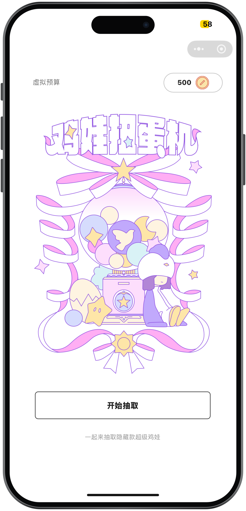
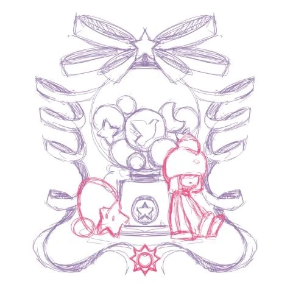
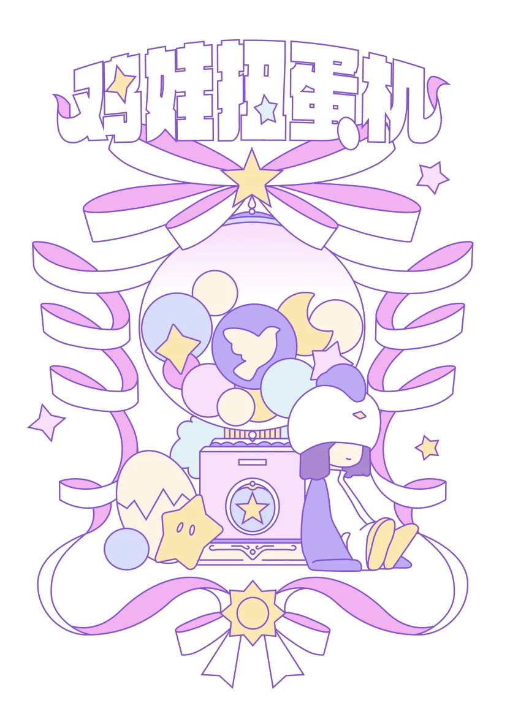
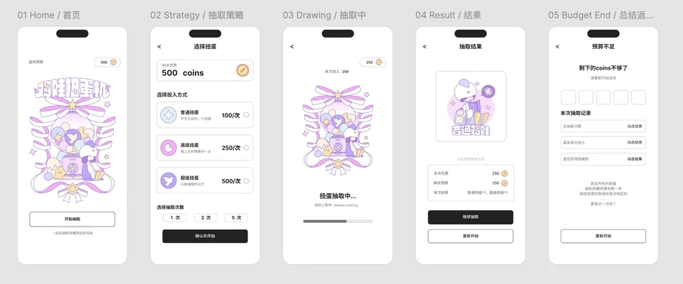
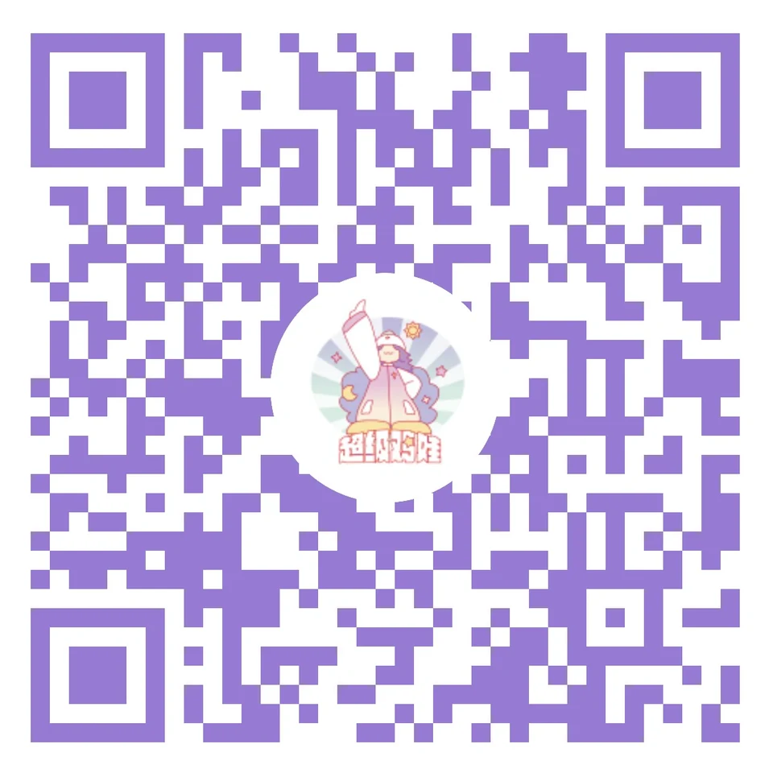

DIGITAL & NEW MEDIA / 2026.06
超级鸡娃

《超级鸡娃》是“海淀鸡娃”毕业设计中的小程序交互作品。由于展览中的实体扭蛋机无法实际扭出蛋体，设计以线上抽取体验作为补充，借用盲盒抽卡机的界面形式，将装置中的投入、期待与结果的不确定性延伸到可参与的数字体验中。
用户在固定额度的虚拟预算内安排抽取策略，可以集中投入一次高价抽取，也可以分散为多次低价尝试。选择看似提供了控制结果的可能，但不同策略并不会改变每次抽取的底层概率。反复投入与等待结果的过程，使参与者体会从掌控感到落空感的变化，并重新思考教育投入、社会期待与个体成长之间的关系。








